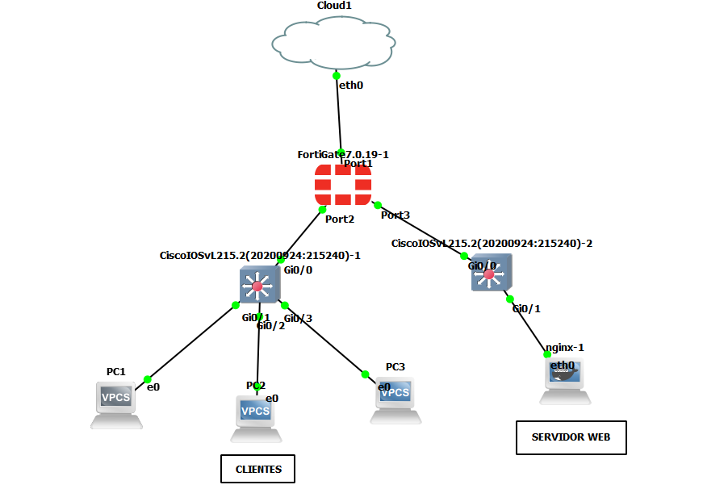
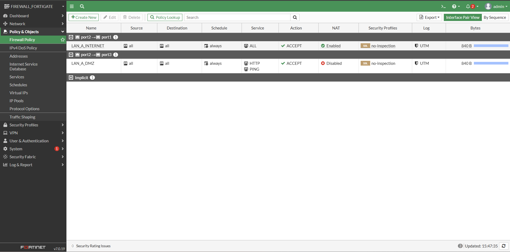

Tu Nombre Completo
Especialidad: Profesional en Redes y Ciberseguridad
📧 tu-correo@email.com | 💼 ://linkedin.com
Sobre Mí
Apasionado por la infraestructura de red, la seguridad perimetral y la administración de plataformas Fortinet. Experiencia práctica configurando firewalls, segmentación de zonas y control de acceso.
Proyectos Destacados
Laboratorio de Seguridad Perimetral y Segmentación con FortiGate
Diseño e implementación desde cero de una topología de red corporativa segura utilizando GNS3 y FortiGate-VM64.


- Segmentación estricta de zonas mediante políticas de firewall: LAN, DMZ y WAN.
- Mitigación y corrección de bucles de enrutamiento presentes en diseños iniciales.
- Gestión del firewall a través de CLI y entorno gráfico (GUI) mediante conexión Cloud.
- Configuración de políticas de traducción de direcciones (NAT) para salida segura a Internet.
🔧 Tecnologías: FortiOS, GNS3, Cisco IOSvL2, Docker (Nginx), Redes L3, NAT.
Habilidades Técnicas
- Seguridad Perimetral: Firewalls Fortinet (FortiGate CLI/GUI), Políticas de seguridad, NAT.
- Simuladores de Red: GNS3, Cisco Packet Tracer.
- Networking: Enrutamiento y Conmutación (Routing & Switching), Segmentación de zonas.
- Sistemas: Contenedores Docker (Nginx / Web Servers).